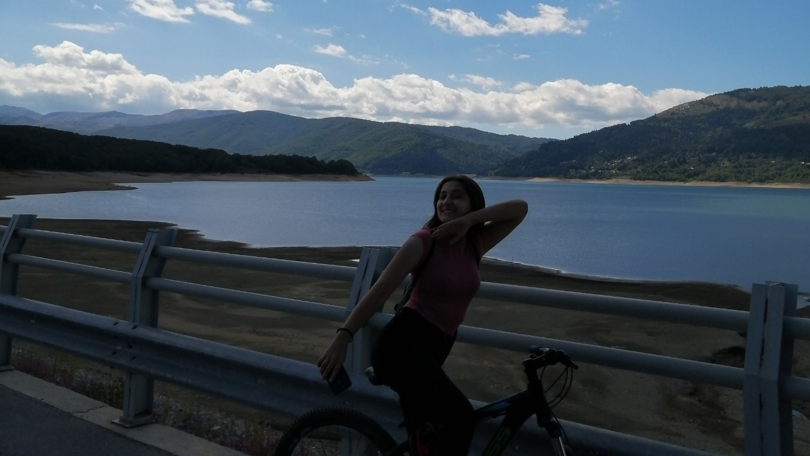

Mavrovo, Macedonia
Intro
In August 2020 my friends and I were really bored at home and tired of seeing everyone enjoy their summer while we were
locked at home. The coronavirus was still spreading quickly so we didn't want to travel anywhere where the risk of catching it
were high. We decided to visit my friend's cottage in Mavrovo since it was summer and there weren't a lot of tourist at that time.
We all took out Covid tests, made sure we were negative and started this 7 day journey which I will never forget since it was
my first time visiting this beautiful village.
Even though this was in the middle of August, the weather was mostly chilly because Mavrovo is located in the mountainous region of western North Macedonia.
Mavrovo is a destination for tourists throughout the year because of its skiing centre "Zare Lazarevski", national park and lake. There are weekend houses, inns and hotels offering accommodation for tourists all year round.
I can't recommend it enough, so if you are planning a trip to Macedonia, this place is a must!
Ski lift
Mavrovo is the home of the skiing centre "Zare Lazarevski" but, as I mentioned, we visited Mavrovo during the summer, so we weren't able to ski since there was no snow, which
I was very happy about. Have I mentioned that I hate snow?
Anyway, we wanted to try out the ski lift, and I must say that was one of the scariest things that I have experienced. But we made it up, we had a little picnic, took
some pictures and just had fun. My friend Bodan and I climbed to the top and took some gorgeous photos with Mavrovo Lake and honestly we were really proud of ourselves.

Bike ride
And my favorite activity of the whole trip was the 3 hour bike ride that we took around Mavrovo Lake. We really didn't plan to ride around the whole lake
but when we realised that we got half way there, we decided to finish what we started. I must say that I was in pain 2 days after this but it was definitely worth it!
We rode 31km which is a lot for people that haven't moved a muscle for half a year because of the pandemic. I love biking so this was by far the most exciting thing which I will be proud
for a long time and probably will brag about.